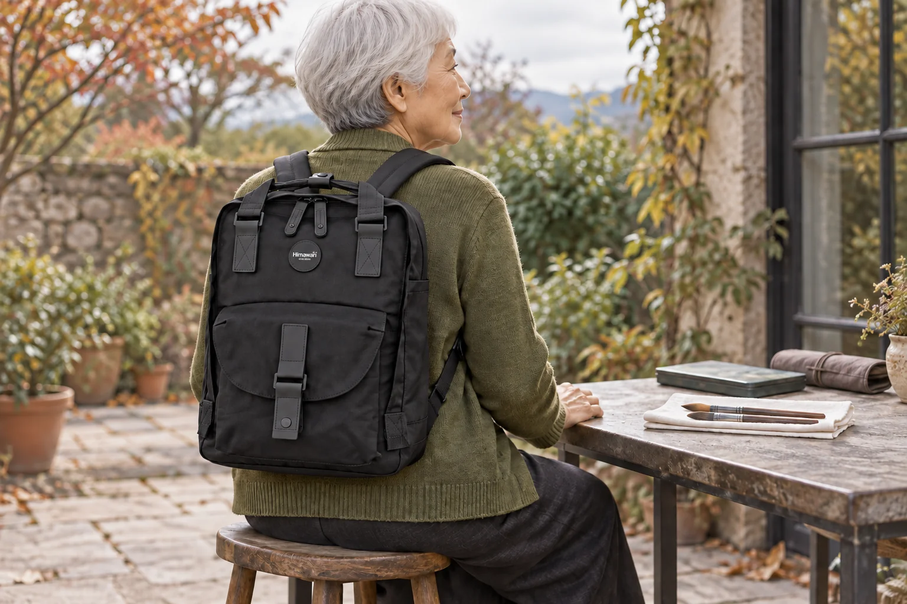

수채화 붓을 백팩에 되담을 때: 물기와 붓끝부터

수채화를 한 장 그리고 나면 종이보다 붓을 먼저 가방에 넣고 싶어집니다. 물통 옆에 있던 붓은 겉으로 말끔해 보여도 털 사이와 금속 연결부에 물기가 남아 있을 수 있습니다. 그림을 끝낸 자리에서 정리할 일과 집에 돌아와 마칠 일을 나눠보세요.
붓에 남은 물감과 물기를 확인합니다
사용한 붓은 해당 붓과 물감의 관리 안내에 따라 정리합니다. Winsor & Newton의 수채화 붓 관리 안내는 물감을 제거한 뒤 보풀이 적은 천이나 종이로 남은 물기를 덜어내고 붓끝 모양을 정돈하도록 설명합니다. 물통에서 꺼낸 붓을 흔들어 가방 옆에 놓기보다, 깨끗한 천을 준비해 붓의 상태를 먼저 살펴보세요. 현장에서 씻을 곳이 없다면 장소의 이용 안내에 맞춰 처리합니다.
붓끝을 누르는 뚜껑인지 봅니다
붓을 넣는 케이스는 손잡이 길이만 맞으면 끝이 아닙니다. 닫을 때 털이 휘거나 끝이 뚜껑에 닿는지 빈 케이스와 함께 확인하세요. 원래 제공된 캡도 모양이 맞는지 보고 억지로 밀어 끼우지 않습니다. 다른 붓이나 금속 도구를 붓끝 위에 겹쳐 담지 말고, 서로 맞닿는 위치를 눈으로 볼 수 있게 정리합니다.
귀가용 정리와 마른 보관을 구분합니다
아직 덜 마른 붓을 이동 때문에 잠깐 담았다면 집에 도착한 뒤 바로 꺼내 관리 안내대로 말립니다. Winsor & Newton은 완전히 마른 뒤 보관하도록 안내합니다. 이동에 쓴 케이스도 안쪽 상태를 확인하고, 사용한 천을 깨끗한 도구와 계속 함께 두지 마세요. 정리한 가방을 현관에 둔 채 다음 그림 시간까지 붓을 잊지 않는 것이 마지막 단계입니다.
No.200 사진은 착용 비율을 보여줍니다
사진 속 No.200은 카탈로그 기준 가로 28 × 세로 39 × 폭 15cm입니다. 검정 몸체, 둥근 로고 패치와 앞쪽 플랩 포켓의 형태를 원본에 맞춰 표현했습니다. 케이스를 안에 넣어 시험한 사진은 아닙니다. 본인의 붓 케이스가 닫힌 상태에서 가방 입구를 통과하는지, 붓끝 쪽을 다른 짐이 누르지 않는지 직접 확인하세요.
참고·안내
- Himawari No.200 제품 정보
- 실제 Himawari No.200 원본과 확인된 외부 치수를 참조한 AI 착용 연출입니다. 인물은 가상의 성인이며 붓·팔레트·테이블은 별도 소품입니다.
자주 묻는 질문
젖은 붓을 케이스에 넣은 채 보관해도 되나요?
귀가 후 바로 꺼내 해당 붓의 관리 안내대로 말리세요. 이동용 정리가 장기 보관을 대신하지 않습니다.
사진 속 백팩에 긴 붓 케이스가 들어가나요?
수납을 시험한 사진이 아닙니다. 케이스의 닫힌 길이와 두께, 실제 가방 입구를 함께 확인해야 합니다.